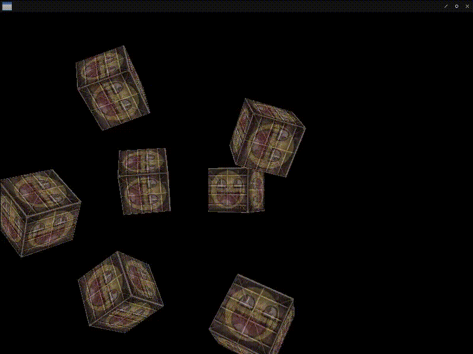

Fight against cl-opengl 13.
Metanotes
対象読者
前章読了済みの方。
Introduction.
前章では遠近法行列を導入して3Dの世界に一歩足を踏み入れました。 本章ではカメラ視点行列を取り入れて二歩目を踏み出します。
Camera.
uniform変数VIEWにカメラ視点行列を渡すだけなので難しいことはありません。
(defun cameras ()
(sdl2:with-init (:everything)
(sdl2:with-window (win :flags '(:shown :opengl)
:x 100
:y 100
:w 800
:h 600)
(sdl2:with-gl-context (context win)
(with-shader ((cubes
(:vertices *depth-demo*)
(:indices '())
(:uniform (tex1 :texture-2d (tex-image-2d *image*))
(tex2 :texture-2d (tex-image-2d *face*))
model view projection)))
(flet ((send (matrix uniform)
(gl:uniform-matrix uniform 4 (vector (3d-matrices:marr matrix)))))
(let ((cube-positions
(list (3d-vectors:vec 0 0 0)
(3d-vectors:vec 2 5 -15)
(3d-vectors:vec -1.5 -2.2 -2.5)
(3d-vectors:vec -3.8 -2.0 -12.3)
(3d-vectors:vec 2.4 -0.4 -3.5)
(3d-vectors:vec -1.7 3 -7.5)
(3d-vectors:vec 1.3 -2 -2.5)
(3d-vectors:vec 1.5 2 -2.5)
(3d-vectors:vec 1.5 0.2 -1.5)
(3d-vectors:vec -1.3 1 -1.5))))
(gl:enable :depth-test)
(sdl2:with-event-loop (:method :poll)
(:quit ()
t)
(:idle ()
(sleep (/ 1 15))
(with-clear (win (:color-buffer-bit :depth-buffer-bit))
(let* ((radius 10)
(v (3d-matrices:mlookat ; <--- New!
(3d-vectors:vec (* (sin (get-internal-real-time)) radius)
0
(* (cos (get-internal-real-time)) radius))
(3d-vectors:vec 0 0 0)
(3d-vectors:vec 0 1 0))))
(loop :for pos :in cube-positions
:for i :upfrom 0
:do (let ((m (3d-matrices:nmrotate (3d-matrices:mtranslation pos)
(3d-vectors:vec 1 0.3 0.5)
(fude-gl:radians (* 20 i))))
(p (3d-matrices:mperspective 45
(multiple-value-call #'/ (sdl2:get-window-size win))
0.1
100)))
(send m model)
(send v view)
(send p projection)
(gl:draw-arrays :triangles 0 36))))))))))))))
WALK-AROUND
ユーザーの入力を受け取りカメラを動かしてみましょう。
コードの規模が大きくなってきたので変数を外に出します。
(defparameter *cube-positions*
(list (3d-vectors:vec 0 0 0) (3d-vectors:vec 2 5 -15)
(3d-vectors:vec -1.5 -2.2 -2.5) (3d-vectors:vec -3.8 -2.0 -12.3)
(3d-vectors:vec 2.4 -0.4 -3.5) (3d-vectors:vec -1.7 3 -7.5)
(3d-vectors:vec 1.3 -2 -2.5) (3d-vectors:vec 1.5 2 -2.5)
(3d-vectors:vec 1.5 0.2 -1.5) (3d-vectors:vec -1.3 1 -1.5)))入力に従って新しいベクタを計算する処理です。
なお3D-VECTORS:VUNITはglm::normalizeに相当し、3D-VECTORS:VCはglm::crossに相当します。
(defun move-camera (keysym camera-front camera-up camera-pos)
(let ((camera-speed 0.05))
(case (sdl2:scancode keysym)
(:scancode-up
(3d-vectors:nv+ camera-pos (3d-vectors:v* camera-speed camera-front)))
(:scancode-down
(3d-vectors:nv- camera-pos (3d-vectors:v* camera-speed camera-front)))
(:scancode-left
(3d-vectors:v- camera-pos
(3d-vectors:v*
(3d-vectors:vunit
(3d-vectors:vc camera-front camera-up))
camera-speed)))
(:scancode-right
(3d-vectors:v+ camera-pos
(3d-vectors:v*
(3d-vectors:vunit
(3d-vectors:vc camera-front camera-up))
camera-speed)))
(otherwise camera-pos))))入力イベントをハンドリングするだけなので何も難しくはありません。
(defun walk-around ()
(sdl2:with-init (:everything)
(sdl2:with-window (win :flags '(:shown :opengl)
:x 100
:y 100
:w 800
:h 600)
(sdl2:with-gl-context (context win)
(with-shader ((cubes
(:vertices *depth-demo*)
(:indices '())
(:uniform (tex1 :texture-2d (tex-image-2d *image*))
(tex2 :texture-2d (tex-image-2d *face*))
model view projection)))
(flet ((send (matrix uniform)
(gl:uniform-matrix uniform 4 (vector (3d-matrices:marr matrix)))))
(let ((camera-pos (3d-vectors:vec 0 0 3))
(camera-front (3d-vectors:vec 0 0 -1))
(camera-up (3d-vectors:vec 0 1 0))
(p (3d-matrices:mperspective 45
(multiple-value-call #'/ (sdl2:get-window-size win))
0.1
100)))
(gl:enable :depth-test)
(sdl2:with-event-loop (:method :poll)
(:quit ()
t)
(:keydown (:keysym keysym) ; <--- New!
(setf camera-pos
(move-camera keysym camera-front camera-up camera-pos)))
(:idle ()
(sleep (/ 1 15))
(with-clear (win (:color-buffer-bit :depth-buffer-bit))
(loop :for pos :in *cube-positions*
:for i :upfrom 0
:for m = (3d-matrices:nmrotate (3d-matrices:mtranslation pos)
(3d-vectors:vec 1 0.3 0.5)
(fude-gl:radians (* 20 i)))
:do (send m model)
(send (3d-matrices:mlookat camera-pos
(3d-vectors:v+ camera-pos camera-front)
camera-up)
view)
(send p projection)
(gl:draw-arrays :triangles 0 36))))))))))))
Digressions
学習意欲の高い人の場合3D-VECTORS:VUNITがglm::normalizeに相当するということをどのように調べれば良いのか気になったかもしれません。
ここでは余談として筆者がどのようにして探し出したか手順を記しておきます。
CL:APROPOS
シンボルを探す場合Lispに尋ねるのが早いです。
CL:APROPOSでLispに尋ねられます。
* (apropos "normalize")
ALEXANDRIA::NORMALIZE
ALEXANDRIA::NORMALIZE-AUXILARY
ALEXANDRIA::NORMALIZE-KEYWORD
ALEXANDRIA::NORMALIZE-OPTIONAL
ASDF/INTERFACE::NORMALIZED-VERSION
ASDF/PARSE-DEFSYSTEM::NORMALIZE-VERSION (fbound)
ASDF/FORCING:NORMALIZE-FORCED-NOT-SYSTEMS (fbound)
ASDF/FORCING:NORMALIZE-FORCED-SYSTEMS (fbound)
ASDF/SESSION::NORMALIZED-NAMESTRING
ASDF/SESSION:NORMALIZE-NAMESTRING (fbound)
CFFI-TOOLCHAIN::NORMALIZE-FLAGS (fbound)
CFFI-TOOLCHAIN::NORMALIZEP
CL-COLORS2::NORMALIZE
CL-COLORS2::NORMALIZE-HUE (fbound)
CL-OPENGL::NORMALIZED
CL-OPENGL-BINDINGS::NORMALIZED
CL-PPCRE::NORMALIZE-VAR-LIST (fbound)
COM.GIGAMONKEYS.BINARY-DATA::NORMALIZE-MAPPING (fbound)
COM.GIGAMONKEYS.BINARY-DATA::NORMALIZE-SLOT-SPEC (fbound)
NORMALIZED-VERSION
FLEXI-STREAMS::NORMALIZE-EXTERNAL-FORMAT (fbound)
FLEXI-STREAMS::NORMALIZE-EXTERNAL-FORMAT-NAME (fbound)
:DENORMALIZED-OPERAND (bound)
:NORMALIZE (bound)
:NORMALIZE-AUXILARY (bound)
:NORMALIZE-KEYWORD (bound)
:NORMALIZE-OPTIONAL (bound)
:NORMALIZED (bound)
:NORMALIZED-RANGE-EXT (bound)
:SIGNED-NORMALIZED (bound)
:UNSIGNED-NORMALIZED (bound)
:UNSIGNED-NORMALIZED-ARB (bound)
:UNSIGNED-NORMALIZED-EXT (bound)
:VERTEX-ATTRIB-ARRAY-NORMALIZED (bound)
:VERTEX-ATTRIB-ARRAY-NORMALIZED-ARB (bound)
LOCAL-TIME::%NORMALIZE-MONTH-YEAR-PAIR (fbound)
OPTICL::NORMALIZE-ARRAY (fbound)
SB-BIGNUM::%MOSTLY-NORMALIZE-BIGNUM (fbound)
SB-BIGNUM::%NORMALIZE-BIGNUM (fbound)
SB-BIGNUM::%NORMALIZE-BIGNUM-BUFFER (fbound)
SB-BIGNUM::FULLY-NORMALIZE
SB-C::NORMALIZE-BOUND
SB-IMPL::NORMALIZE-DEPRECATION-REPLACEMENTS (fbound)
SB-IMPL::NORMALIZE-DEPRECATION-SINCE (fbound)
SB-IMPL::NORMALIZE-FN
SB-IMPL::NORMALIZE-PTR
SB-IMPL::NORMALIZE-READ-BUFFER (fbound)
SB-IMPL::NORMALIZED-EXTERNAL-FORMAT
SB-IMPL::STR-TO-NORMALIZE
SB-KERNEL::NORMALIZE
SB-PCL::*NORMALIZE-TYPE (fbound)
SB-PCL::NORMALIZE-OPTIONS
SB-UNICODE:NORMALIZE-STRING (fbound)
SB-UNICODE:NORMALIZED-P (fbound)
FLOAT-DENORMALIZED-P (fbound)
UIOP/LAUNCH-PROGRAM::%NORMALIZE-IO-SPECIFIER (fbound)
UIOP/PATHNAME::NORMALIZE-COMPONENT
UIOP/RUN-PROGRAM::%NORMALIZE-SYSTEM-COMMAND (fbound)
UIOP/PATHNAME:DENORMALIZE-PATHNAME-DIRECTORY-COMPONENT (fbound)
UIOP/PATHNAME:NORMALIZE-PATHNAME-DIRECTORY-COMPONENT (fbound)
UIOP/UTILITY::NORMALIZED
LEAST-NEGATIVE-NORMALIZED-DOUBLE-FLOAT (bound)
LEAST-NEGATIVE-NORMALIZED-LONG-FLOAT (bound)
LEAST-NEGATIVE-NORMALIZED-SHORT-FLOAT (bound)
LEAST-NEGATIVE-NORMALIZED-SINGLE-FLOAT (bound)
LEAST-POSITIVE-NORMALIZED-DOUBLE-FLOAT (bound)
LEAST-POSITIVE-NORMALIZED-LONG-FLOAT (bound)
LEAST-POSITIVE-NORMALIZED-SHORT-FLOAT (bound)
LEAST-POSITIVE-NORMALIZED-SINGLE-FLOAT (bound)出力が多い場合はPACKAGEを指定して探すこともできます。
* (apropos "normalize" :3d-vectors)
LEAST-NEGATIVE-NORMALIZED-DOUBLE-FLOAT (bound)
LEAST-NEGATIVE-NORMALIZED-LONG-FLOAT (bound)
LEAST-NEGATIVE-NORMALIZED-SHORT-FLOAT (bound)
LEAST-NEGATIVE-NORMALIZED-SINGLE-FLOAT (bound)
LEAST-POSITIVE-NORMALIZED-DOUBLE-FLOAT (bound)
LEAST-POSITIVE-NORMALIZED-LONG-FLOAT (bound)
LEAST-POSITIVE-NORMALIZED-SHORT-FLOAT (bound)
LEAST-POSITIVE-NORMALIZED-SINGLE-FLOAT (bound)見つからない場合たとえばizeがiseだったりするかもしれませんので引数を変えて訊ねてみます。
なおCL-PPCREには正規表現に対応したREGEX-APROPOSという関数もあるのでそちらを使うのもいいでしょう。
本格的に見つからない場合そもそもglm::normalizeが何をする処理なのかGLMのドキュメントを読んでみます。
以下のようにあります。
calculates the unit vector in the same direction as the original vector
なけなしの線形代数に関する記憶でunit vectorという単語に思い当たる節があります。
そこで今度はunitで訊ねてみます。
* (apropos "unit" :3d-vectors)
INTERNAL-TIME-UNITS-PER-SECOND (bound)
3D-VECTORS:NVUNIT (fbound)
3D-VECTORS:VUNIT (fbound)
WITH-COMPILATION-UNIT (fbound)頭にNが付いているのはベクタを破壊的に変更するものであると3d-vectorsのREADMEにあります。
3D-VECTORS:VUNITが本丸のようです。
CL:DESCRIBEで詳細を見ます。
* (describe '3d-vectors:vunit)
3D-VECTORS:VUNIT
[symbol]
VUNIT names a compiled function:
Lambda-list: (3D-VECTORS::A)
Declared type: (FUNCTION
((OR 3D-VECTORS:VEC2 3D-VECTORS:VEC3
3D-VECTORS:VEC4))
(VALUES
(OR 3D-VECTORS:VEC2 3D-VECTORS:VEC3 3D-VECTORS:VEC4)
&REST T))
Documentation:
Returns the unit vector form of the given vector by the 2-norm.
Inline proclamation: MAYBE-INLINE (inline expansion available)
Source file: /home/hyotang666/.roswell/lisp/quicklisp/dists/quicklisp/software/3d-vectors-20201220-git/ops.lispDocumentationを見ると同じものであるようです。
一応念の為REPLで叩いて挙動を確認します。
* (3d-vectors:vunit (3d-vectors:vec 1 1))
(3D-VECTORS:VEC2 0.70710677 0.70710677)
* (3d-vectors:vx *)
0.70710677
* (abs (complex * *))
1.0